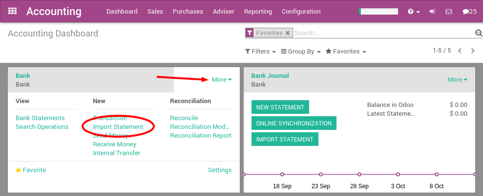
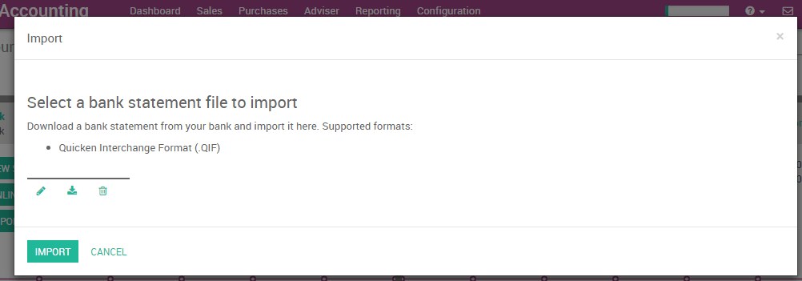

加快交换格式(QIF)是一种开放式的阅读和写作财务数据媒体(例如文件)的规范,。尽管仍然广泛使用,QIF比公开的金融交易(OFX)的格式要老. 你应该使用OFX版本,这样两个格式都能导出.
使用YuanCloud,你可以从从你的银行或财务软件下载一个QIF文件, 并将其直接导入YuanCloud实例。这将创建所有银行对账单。
小技巧
现在测试示例QIF文件的功能 <https://drive.google.com/file/d/0B5BDHVRYo-q5X1ZkUWYzWmtCX0E/view>`__
配置
为了导入QIF,您需要在在YuanCloud激活其特性。在会计应用程序中,进入菜单:menuselection:[UNKNOWN NODE title_reference]。从会计设置,检查银行对账单选项**Import in .QIF Format** 和应用。

一旦你安装这个功能,你可以设置你的银行账户,允许导入银行对账单文件。要做到这一点,去会计仪表板,点击银行账户的**More**按钮。然后,点击 [UNKNOWN NODE problematic]Import Statement**加载第一个QIF文件。
在下面的屏幕中加载QIF文件,单击 Import 创建你所有的银行对账单。
如果成功加载该文件，你会被重定向到银行核对屏幕，所有的交易会被重新核对。
导入 QIF 文件
在导入你的第一个文件之后,YuanCloud会计仪表板将自动建议你导入更多文件。在接下来的文件导入,你不需要去 More 菜单了,您可以直接点击链接**Import Statement**。

每次你得到一个新客户/供应商的相关对账单时,YuanCloud将要求您选择正确的核销对象。从此操作信息,YuanCloud将自动完成下一个付款或是这些联系。这将加快核销进程。